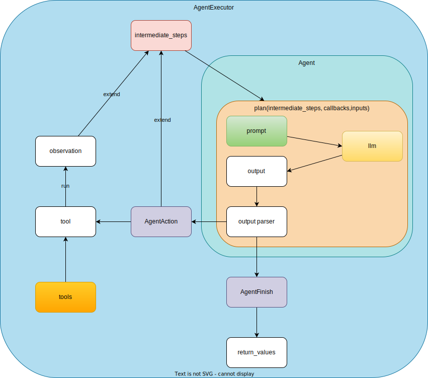

Agent (Old)
Warning
Please check Agent for the latest information.
Overview
Agentは基本AgentExecutorから実行されるAgentにはTools,llm,prompt,parserで構成される。initialize_agentで初期化する場合には、AgentTypeを指定することでpromptとparserはDefaultのものを使うことができるPromptは、initialize_agentで初期化する場合には、AgentTypeによってDefault Promptが異なっているが、自分で指定することも可能。 例.SelfAskWithSearchでは、LLMにFollow up: <toolに聞く質問>を返してもらい、The final answer is <最終的な回答>を返してもらうようにしているToolsはどのように呼ばれるかOutputParserは、Promptに対応するもので、llmから返ってきたOutputをParseするもの。 例.SelfAskWithSearchでは、返ってきたoutputの最終行にFollow up:があれば、AgentActionを返し、The final answer isがあれば、AgentFinishを返し、それ以外は、OutputParserExceptionを返すようにしている。

Implementation (Old)
Warning
Please check Agent for the latest information.
AgentExecutor
一つのAgentと複数のToolsをもつ
実行されるときは、初期化されたagent_executor("Jiraからパフォーマンステストに関するチケットを取得してください。") という形で呼ばれ、AgentExecutorの継承元のChain.__call__() が呼ばれ、AgentExecutor._callがその中で呼ばれる。そして、この中でAgentのplanを呼ぶ。
Chain.__call__:
def __call__(
self,
inputs: Union[Dict[str, Any], Any],
return_only_outputs: bool = False,
callbacks: Callbacks = None,
*,
tags: Optional[List[str]] = None,
metadata: Optional[Dict[str, Any]] = None,
run_name: Optional[str] = None,
include_run_info: bool = False,
) -> Dict[str, Any]:
"""Execute the chain.
Args:
inputs: Dictionary of inputs, or single input if chain expects
only one param. Should contain all inputs specified in
`Chain.input_keys` except for inputs that will be set by the chain's
memory.
return_only_outputs: Whether to return only outputs in the
response. If True, only new keys generated by this chain will be
returned. If False, both input keys and new keys generated by this
chain will be returned. Defaults to False.
callbacks: Callbacks to use for this chain run. These will be called in
addition to callbacks passed to the chain during construction, but only
these runtime callbacks will propagate to calls to other objects.
tags: List of string tags to pass to all callbacks. These will be passed in
addition to tags passed to the chain during construction, but only
these runtime tags will propagate to calls to other objects.
metadata: Optional metadata associated with the chain. Defaults to None
include_run_info: Whether to include run info in the response. Defaults
to False.
Returns:
A dict of named outputs. Should contain all outputs specified in
`Chain.output_keys`.
"""
As you can see inputs: Dictionary of inputs, or single input if chain expects only one param. Should contain all inputs specified in Chain.input_keys except for inputs that will be set by the chain's memory.
Chain.input_keysは AgentExecutorのinput_keysを参照している。
@property
def input_keys(self) -> List[str]:
"""Get the input keys for this chain."""
return self.agent.input_keys
AgentExecutor._call:
_call -> self._take_next_step -> self._iter_next_step -> self.agent.plan(intermediate_steps, callbacks, **inputs)と呼ぶ
# Call the LLM to see what to do.
output = self.agent.plan(
intermediate_steps,
callbacks=run_manager.get_child() if run_manager else None,
**inputs,
)
inputs: Dict[str, str]はDict。
Plan
上記のAgentはAgentまたはBaseSingleActionAgentを継承している
initialize_agent
agentにAgentType (e.g.AgentType.ZERO_SHOT_REACT_DESCRIPTION(=zero-shot-react-description))を指定してAgentを作成
返り値はAgentExecutor
使い方:
agentまたはagent_pathを指定して作成
agent_executor = initialize_agent(
tools,
llm,
agent=AgentType.ZERO_SHOT_REACT_DESCRIPTION,
verbose=True
)
実装:
- Agent Classを取得
- AgentのObjectを各Agentの
from_llm_and_toolsメソッドを使って生成agentの場合:AgentClass.from_llm_and_toolsAgentごとに定義されていて、この中でpromptも設定される (例. OpenAIFunctionsAgent.from_llm_and_tools)agent_obj = agent_cls.from_llm_and_tools( llm, tools, callback_manager=callback_manager, **agent_kwargs )agent_pathの場合:load_agent()
- AgentExecutorの生成とReturn
OutputParser
Agent Types (Old)
Warning
Please check Agent for the latest information.
| Agent Type | Plan | Prompt | OutputParser | Link |
|---|---|---|---|---|
| ZeroShotAgent(Agent) | Agent(BaseSingleActionAgent)のplanを参照 |
|||
| ReActDocstoreAgent(Agent) | Agent(BaseSingleActionAgent)のplanを参照 |
React Docstore | ||
| SelfAskWithSearchAgent(Agent) | Agent(BaseSingleActionAgent)のplanを参照 |
Self Ask with Search | ||
| ConversationalAgent(Agent) | Agent(BaseSingleActionAgent)のplanを参照 |
|||
| ChatAgent(Agent) | Agent(BaseSingleActionAgent)のplanを参照 |
|||
| ConversationalChatAgent(Agent) | Agent(BaseSingleActionAgent)のplanを参照 |
|||
| StructuredChatAgent(Agent) | Agent(BaseSingleActionAgent)のplanを参照 |
|||
| OpenAIFunctionsAgent(BaseSingleActionAgent) | planはOpenAIFunctionsAgentに定義 |
OpenAIFunctionsAgentOutputParser._parse_ai_message | ||
| OpenAIMultiFunctionsAgent(BaseSingleActionAgent) | planはOpenAIMultiFunctionsAgentに定義 |
|||
| Custom ReAct Agent | ReActTestAgent(Agent): Agent(BaseSingleActionAgent)のplanを参照 |
Agent, Prompt, OutputParserを定義することでCustom Agentを作成できる |
AGENT_TO_CLASSが作成できるAgentType:
AGENT_TO_CLASS: Dict[AgentType, AGENT_TYPE] = {
AgentType.ZERO_SHOT_REACT_DESCRIPTION: ZeroShotAgent,
AgentType.REACT_DOCSTORE: ReActDocstoreAgent,
AgentType.SELF_ASK_WITH_SEARCH: SelfAskWithSearchAgent,
AgentType.CONVERSATIONAL_REACT_DESCRIPTION: ConversationalAgent,
AgentType.CHAT_ZERO_SHOT_REACT_DESCRIPTION: ChatAgent,
AgentType.CHAT_CONVERSATIONAL_REACT_DESCRIPTION: ConversationalChatAgent,
AgentType.STRUCTURED_CHAT_ZERO_SHOT_REACT_DESCRIPTION: StructuredChatAgent,
AgentType.OPENAI_FUNCTIONS: OpenAIFunctionsAgent,
AgentType.OPENAI_MULTI_FUNCTIONS: OpenAIMultiFunctionsAgent,
}
OpenAIFunctionsAgent
openaiのfunction callingを使う。実際にFunctionを選んで呼ぶ部分はlangchain内にないので、コントロールは出来ない。
ref: https://cookbook.openai.com/examples/how_to_call_functions_with_chat_models
構成要素
1. llm: BaseLanguageModel
1. tools: Sequence[BaseTool]
1. prompt: BasePromptTemplate
Agentの初期化
OpenAIFunctionsAgent.from_llm_and_toolsでAgentが初期化される
@classmethod
def from_llm_and_tools(
cls,
llm: BaseLanguageModel,
tools: Sequence[BaseTool],
callback_manager: Optional[BaseCallbackManager] = None,
extra_prompt_messages: Optional[List[BaseMessagePromptTemplate]] = None,
system_message: Optional[SystemMessage] = SystemMessage(
content="You are a helpful AI assistant."
),
**kwargs: Any,
) -> BaseSingleActionAgent:
"""Construct an agent from an LLM and tools."""
if not isinstance(llm, ChatOpenAI):
raise ValueError("Only supported with ChatOpenAI models.")
prompt = cls.create_prompt(
extra_prompt_messages=extra_prompt_messages,
system_message=system_message,
)
return cls(
llm=llm,
prompt=prompt,
tools=tools,
callback_manager=callback_manager,
**kwargs,
)
prompt
prompt = cls.create_prompt(
extra_prompt_messages=extra_prompt_messages,
system_message=system_message,
)
- system_message: Message to use as the system message that will be the first in the prompt. defaultでは
You are a helpful AI assistant.が渡される - extra_prompt_messages: Prompt messages that will be placed between the system message and the new human input. defaultではNoneがわたされる
@classmethod
def create_prompt(
cls,
system_message: Optional[SystemMessage] = SystemMessage(
content="You are a helpful AI assistant."
),
extra_prompt_messages: Optional[List[BaseMessagePromptTemplate]] = None,
) -> BasePromptTemplate:
"""Create prompt for this agent.
Args:
system_message: Message to use as the system message that will be the
first in the prompt.
extra_prompt_messages: Prompt messages that will be placed between the
system message and the new human input.
Returns:
A prompt template to pass into this agent.
"""
_prompts = extra_prompt_messages or []
messages: List[Union[BaseMessagePromptTemplate, BaseMessage]]
if system_message:
messages = [system_message]
else:
messages = []
messages.extend(
[
*_prompts,
HumanMessagePromptTemplate.from_template("{input}"),
MessagesPlaceholder(variable_name="agent_scratchpad"),
]
)
return ChatPromptTemplate(messages=messages)
Final prompt:
ChatPromptTemplate(input_variables=['agent_scratchpad', 'input'], input_types={'agent_scratchpad': typing.List[typing.Union[langchain_core.messages.ai.AIMessage, langchain_core.messages.human.HumanMessage, langchain_core.messages.chat.ChatMessage, langchain_core.messages.system.SystemMessage, langchain_core.messages.function.FunctionMessage, langchain_core.messages.tool.ToolMessage]]}, messages=[SystemMessage(content='You are a helpful AI assistant.'), HumanMessagePromptTemplate(prompt=PromptTemplate(input_variables=['input'], template='{input}')), MessagesPlaceholder(variable_name='agent_scratchpad')])
実行
初期化で作成された共通の処理でAgentExecutor(input)が呼ばれたときにChain.__call__ -> AgentExecutor._call -> self._take_next_step -> self._iter_next_step -> self.agent.plan(intermediate_steps, callbacks, **inputs)と呼ばれる
plan
intermediate_stepsを受け取って、llmに聞いて、AgentActionまたはAgentFinishを返す
def plan(
self,
intermediate_steps: List[Tuple[AgentAction, str]],
callbacks: Callbacks = None,
with_functions: bool = True,
**kwargs: Any,
) -> Union[AgentAction, AgentFinish]:
- 引数の値
intermediate_stepsは、[(AgentAction, text), (AgentAction, text), ...]のような形式で渡されるが、初期値は[]である**kwargsには**inputsが渡されているが、具体的には、{"input": inputs}となる。- たどり方は、
agent.planを呼ぶAgentExecutor._iter_next_stepの引数のinputsで、AgentExecutor._take_next_stepの引数のinputsで、AgentExecutor._callの引数のinputsである。 - 更にたどるとChain.callの中で
inputs = self.prep_inputs(inputs)で、AgentExecutor(inputs)から渡ってきたinputsの変換処理が行われている。詳細は省くが、inputsがstrで渡された場合には、{"input": inputs}に変換される。 - なぜならOpenAIFunctionsAgent.input_keysは
["input"]で、_input_keys = set(self.input_keys)->inputs = {list(_input_keys)[0]: inputs}とセットされているからである。
agent_scratchpad = format_to_openai_function_messages(intermediate_steps)- format_to_openai_function_messagesで
agent_scratchpadを生成 - 返り値は、
List[BaseMessage]今までのAgentActionと結果をまとめたもの - intermediate_stepsが
[]の場合には、agent_scratchpadは[]となる
- format_to_openai_function_messagesで
selected_inputs = { k: kwargs[k] for k in self.prompt.input_variables if k != "agent_scratchpad" }full_inputsを作成self.prompt.input_variablesは、['agent_scratchpad', 'input']なので、実質kはinputのみ。kwargsは{"input": inputs}なので、selected_inputsは{"input": inputs}となる。例えば、AgentExecutor("日本の人口は？")の場合には、selected_inputsは{"input": "日本の人口は？"}となる。
full_inputs = dict(selected_inputs, agent_scratchpad=agent_scratchpad)full_inputsを作成full_inputsは、{"input": inputs, "agent_scratchpad": agent_scratchpad}となる。例えば、AgentExecutor("日本の人口は？")の場合には、full_inputsは{"input": "日本の人口は？", "agent_scratchpad": []}となる。
- input_variablesとあわせて
prompt = self.prompt.format_prompt(**full_inputs)でpromptの生成- 上の例だと、promptは、
ChatPromptValue(messages=[SystemMessage(content='You are a helpful AI assistant.'), HumanMessage(content='日本の人口は')])となる
- 上の例だと、promptは、
messages = prompt.to_messages()でmessageを生成- 上の例だと、
messagesは、[SystemMessage(content='You are a helpful AI assistant.'), HumanMessage(content='日本の人口は')]となる
- 上の例だと、
-
predicted_message = self.llm.predict_messages()を使ってllmに聞くif with_functions: predicted_message = self.llm.predict_messages( messages, functions=self.functions, callbacks=callbacks, ) else: predicted_message = self.llm.predict_messages( messages, callbacks=callbacks, )>>> agent_executor.agent.functions [{'name': 'Search', 'description': 'useful for when you need to answer questions about current events. You should ask targeted questions', 'parameters': {'properties': {'__arg1': {'title': '__arg1', 'type': 'string'}}, 'required': ['__arg1'], 'type': 'object'}}]BaseChatModel.predict_messages (ChatOpenAIの場合)
1. 実際には、def predict_messages( self, messages: List[BaseMessage], *, stop: Optional[Sequence[str]] = None, **kwargs: Any, ) -> BaseMessage: if stop is None: _stop = None else: _stop = list(stop) return self(messages, stop=_stop, **kwargs)predict_messages(messages, stop=None, functions=agent_executor.agent.functions)が入れられて呼ばれる →return self(text, stop=_stop, **kwargs)1. BaseChatModel.__call__ 1. BaseChatModel.generate 1. 各messagesに対して BaseChatModel._generate_with_cache(m, stop=stop, run_manager=run_managers[0], **kwargs) が呼ばれる 1.self._generateが呼ばれるが実装はChatOpenAI._generate 1.message_dicts, params = self._create_message_dicts(messages, stop): messages とstopからmessage_dictsとparamsを生成 1.message_dicts = [convert_message_to_dict(m) for m in messages]1.ChatOpenAI.completion_with_retry(messages=message_dicts, run_manager=run_manager, **params)1. ChatOpenAI.client.create(**kwargs):**kwargsの実際の値はmessages=message_dicts, **params1. function-calling 最終的には openaiのclientでFunctionsが呼べるようになっている最終的にmessages = [{"role": "user", "content": "What's the weather like in San Francisco, Tokyo, and Paris?"}] tools = [ { "type": "function", "function": { "name": "get_current_weather", "description": "Get the current weather in a given location", "parameters": { "type": "object", "properties": { "location": { "type": "string", "description": "The city and state, e.g. San Francisco, CA", }, "unit": {"type": "string", "enum": ["celsius", "fahrenheit"]}, }, "required": ["location"], }, }, } ] response = client.chat.completions.create( model="gpt-3.5-turbo-1106", messages=messages, tools=tools, tool_choice="auto", # auto is default, but we'll be explicit )LLMResultが返されている。 1. functions1. 簡単な例@property def functions(self) -> List[dict]: return [dict(format_tool_to_openai_function(t)) for t in self.tools]1. AIMessageをOutput ParserでParseして、AgentActionまたはAgentFinishを返す 1. OpenAIFunctionsAgentOutputParserで、from langchain_openai import ChatOpenAI from langchain.agents import AgentType, Tool, initialize_agent from langchain.tools.render import format_tool_to_openai_function from langchain_community.utilities import SerpAPIWrapper llm = ChatOpenAI() search = SerpAPIWrapper() tools = [ Tool( name="Search", func=search.run, description="useful for when you need to answer questions about current events. You should ask targeted questions", ), ] agent_executor = initialize_agent( tools, llm, agent=AgentType.OPENAI_FUNCTIONS, verbose=True ) functions = [dict(format_tool_to_openai_function(t)) for t in tools] full_inputs = {'input': "Who is Leo DiCaprio's girlfriend? What is her current age raised to the 0.43 power?", 'agent_scratchpad': []} prompt = agent_executor.agent.prompt.format_prompt(**full_inputs) messages = prompt.to_messages() # [SystemMessage(content='You are a helpful AI assistant.'), HumanMessage(content="Who is Leo DiCaprio's girlfriend? What is her current age raised to the 0.43 power?")] llm(messages, stop=None, functions=functions) # agent_executor.agent.functions # return: AIMessage(content='', additional_kwargs={'function_call': {'arguments': '{\n "__arg1": "Leo DiCaprio\'s girlfriend"\n}', 'name': 'Search'}})_parse_ai_messageを使ってOutputをParseしてAgentFinishまたは、AgentActionMessageLog(AgentAction)を返す 1. 具体的には、
Custom Agent (API integration)
OpenAIFunctionsAgentを使うが、 JQLやSourcegraphのような自由度の高いQueryを使って検索できる外部APIに関しては、APIのReferenceもInputにしてあげた方がいい。
- 基本は
OpenAIFunctionsAgentorSTRUCTURED_CHAT_ZERO_SHOT_REACT_DESCRIPTION(?)を使う (どのAgentTypeが一番いいのかも検証) - エラー処理の段階で、API Referenceを使って、正しい入力ができるようにする (API referenceは頻繁に変わらないのでCacheなどに入れて置けるとなお良い)
解決したい課題: 1. 外部APIを叩く場合にReferenceを参照できるようにしたい
例. LangChainカスタムツールを作ってAI Agentに渡してみた <- こちらが素晴らしすぎたので、これを参考にする
こちらの例では、 Google Search -> VectorStore -> 検索可能 というかなり拡張性の高いAgentを作成している。
FAQ
- いつ、どのAgentTypeを使うのがいいのか
- Agentを使うのはどういうときか
- ReActとAgentの違いはなにか
- LCELとAgentの違いはなにか
-
value is not a valid list (type=type_error.list)File "/Users/m.naka/repos/nakamasato/gpt-training/python/search/libs/multiturn_agent.py", line 640, in <module> ai = agent.run(input=user) ^^^^^^^^^^^^^^^^^^^^^ File "/Users/m.naka/repos/nakamasato/gpt-training/.venv/lib/python3.11/site-packages/langchain/chains/base.py", line 512, in run return self(kwargs, callbacks=callbacks, tags=tags, metadata=metadata)[ ^^^^^^^^^^^^^^^^^^^^^^^^^^^^^^^^^^^^^^^^^^^^^^^^^^^^^^^^^^^^^^^ File "/Users/m.naka/repos/nakamasato/gpt-training/.venv/lib/python3.11/site-packages/langchain/chains/base.py", line 314, in __call__ final_outputs: Dict[str, Any] = self.prep_outputs( ^^^^^^^^^^^^^^^^^^ File "/Users/m.naka/repos/nakamasato/gpt-training/.venv/lib/python3.11/site-packages/langchain/chains/base.py", line 410, in prep_outputs self.memory.save_context(inputs, outputs) File "/Users/m.naka/repos/nakamasato/gpt-training/.venv/lib/python3.11/site-packages/langchain/memory/chat_memory.py", line 39, in save_context self.chat_memory.add_ai_message(output_str) File "/Users/m.naka/repos/nakamasato/gpt-training/.venv/lib/python3.11/site-packages/langchain_core/chat_history.py", line 59, in add_ai_message self.add_message(AIMessage(content=message)) ^^^^^^^^^^^^^^^^^^^^^^^^^^ File "/Users/m.naka/repos/nakamasato/gpt-training/.venv/lib/python3.11/site-packages/langchain_core/load/serializable.py", line 97, in __init__ super().__init__(**kwargs) File "/Users/m.naka/repos/nakamasato/gpt-training/.venv/lib/python3.11/site-packages/pydantic/v1/main.py", line 341, in __init__ raise validation_error pydantic.v1.error_wrappers.ValidationError: 2 validation errors for AIMessage content str type expected (type=type_error.str) content value is not a valid list (type=type_error.list)